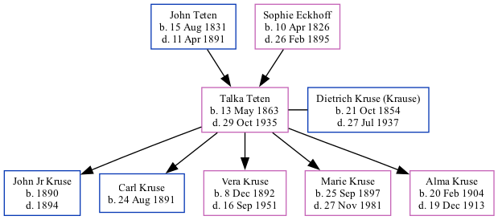

Talka Mary (Krause) (née Teten) 1863 - 1935
[ Home ] | [ Surnames Index ] | [ Family History ]The child of John Teten and Sophie Eckhoff, , Talka was the three times great-aunt of Stephanie Hardesty (née Teten), was born in Germany on May 13, 18631,2 and married Dietrich Kruse (Krause) (with whom she had 5 children: John Jr, Carl, Vera Ann, Marie Catherine and Alma Josephine) in 18892.
During her life, she was living in Mcwilliams and Rock Creek, Otoe, Nebraska, USA in 18801; and in Delaware, Otoe, Nebraska in 19002.
She died on Oct 29, 1935 in Dunbar, Nebraska.
Parents
- John Henry was born on Aug 15, 1831
- Sophie Catherine was born on Apr 10, 1826
Children
- John Jr was born in 1890
- Carl was born on Aug 24, 1891
- Vera Ann was born on Dec 8, 1892
- Marie Catherine was born on Sep 25, 1897
- Alma Josephine was born on Feb 20, 1904
Citations
- 1880 United States Federal Census Ancestry.com Operations Inc (Age: 17; Marital Status: Single; Relation to Head of House: Daughter)
- 1900 United States Federal Census Ancestry.com Operations Inc (Age: 36; Marital Status: Married; Relation to Head of House: Wife)
Family Tree
Data (GEDCOM) maintained by Jay Weston Hannah, Omaha, Nebraska, USA.
Website generated by ged2site. Last updated on Jun 18, 2024.